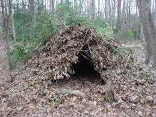
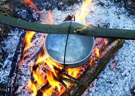
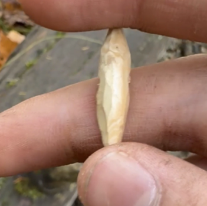
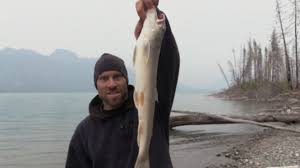

I will now tell you how to make a shelter filter water and get food.
Materials:
Knife
Saw
Paracord
fishing line.
First find a spot in the forest it can be anyware as long as fits the folowing criteria.
1. Protection From Weather.
2. Natural Hazards
3. Well Drained
5. Entryway facing east
6. Fire hazards
7. Plant-animal hazards
8. Abundance of materials
9. Comfort
10. Flat
The shelter we are going to biuld is called a debris hutThis works very well for fall camping because three are many debris on the groundWhen you find your spot clear the are that includes all rocks plants sticks ect.Now that your ground is cleared find a large log that is 10-12 feet long.Find 2 smaller logs and lash them together with paracord.Place the A frame on the spot you clearedPlace sticks and logs all the way down the A-FrameNow cover the sticks with smaller sticks with lots of branchesMake shure to add some horisantle sticks.Cover the sticks in barkPile on brush all over the hut.Fill in the rest of the holes with brush.Now on the inside put a bunch of debris and lay in it to create inslation.
This is what your hut should look like.

Now I will tell you how to filter water.
For this you need a filtration method.This can be anything from a life straw to boiling waterNow find a sorce of water.It should be clear and running.Now take your pot and put it over you camp stove and boil.
You should Get this.

Now we will get food.
Note If you are vegitarian you will not survive because survival is baised on MEAT.
For today we are going to go fishing.Using 40 lb fishing line from multi-strand paracord, as well as a gorge hook. We would throw out the line with a stick attached loosely.
End of fishing line attached to a small stick where the line is wrapped around to help hold the line
Now how the make the gorge hook.
Whittle a stick to be very short and has two sharp ends.

This is how the gorge hook works.Fish eats from the narrow way.
Fish swallows. Fisherman pulls on the hook, turning it horizontal in the fish's guts. Hook gets caught, allowing fisherman to reel the fish in.
Now how to kill the fish.
To kill, insert a knife into a spot directly above between the eyes. To bleed out, place a knife into the gill and snap the veins. To fillet cut from the gill to the tail and remove skin. Using a camping stove or fire, cook the fish.
